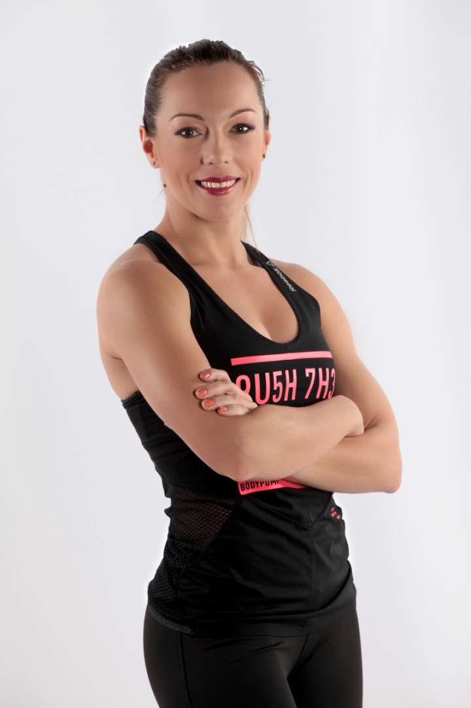
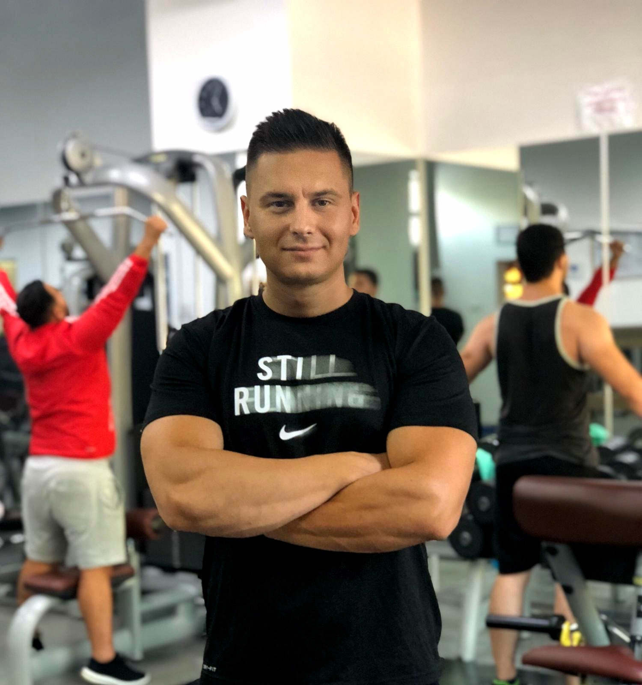
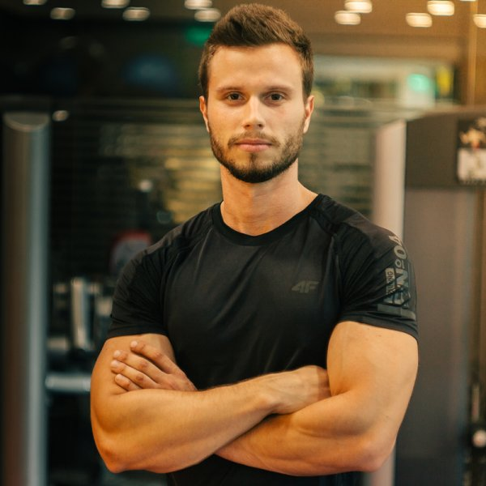
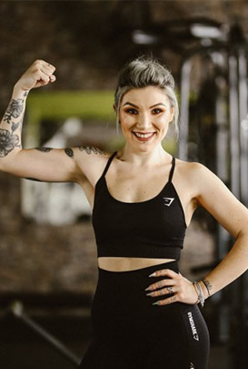
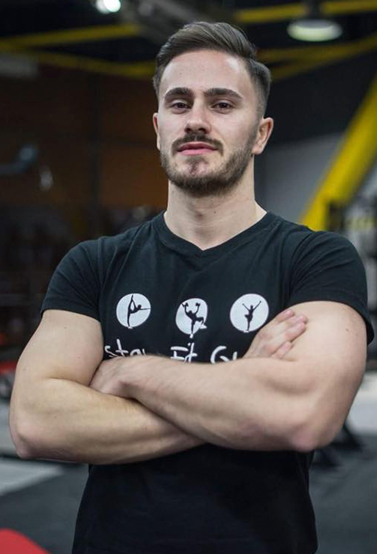
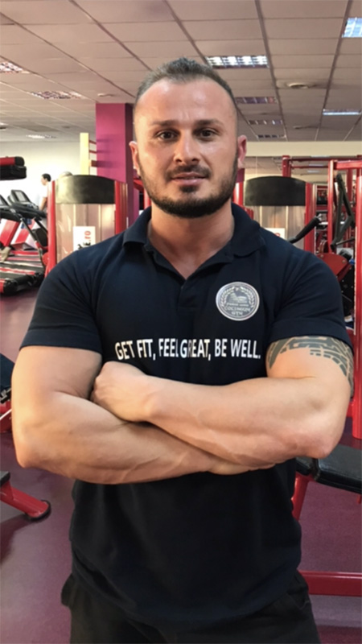

ANTRENORI & INSTRUCTORI
Ce face ca FitClass Club sa fie deosebit de restul salilor de sport din Bucuresti, si sa atraga membri din toate zonele capitalei? Noi credem ca se datoreaza felului in care lucrurile sunt tratate la FitClass. |
In orice facem, intotdeauna avem in minte valorile noastre: provocarea canoanelor si normelor, sportul, socializarea, si buna dispozitie, servicii excelente la preturi rezonabile, inovatie, crearea si mentinerea unui mediu familiar |
|---|
INSTRUCTORI AEROBIC.
|  | ELENA ROXANA MARASESCU – TANA Tana este foarte pasionata de sanatatea prin sport si de peste 12 ani este un instructor model, cu o conditie fizica de invidiat. Controlul si constientizarea miscarii dobandite prin antrenamentele Tanei va vor ajuta cu siguranta in viata de zi cu zi. “Sportul ma defineste ca om, el este cel care intretine dinamica si echilibrul vietii, care da calitate vietii.” |
|---|---|
|  | VLAD SCHIRLIU Fost gimnast si sportiv de performanta Vlad stie ca sportul este mai mult decat o pasiune este un stil de viata. Va astept la orele mele distractive. Va promit un antrenament excelent care te va ajuta sa-ti tonifiezi fesierii coapsele si abdomenul. |
|  | ANDREI NEMTESCU Absolvent EFS si CNFPA, certificat TRX Group Training, antrenor de fotbal, antrenor personal, specialist in antrenament functional, instructor fitness- aerobic. |
INSTRUCTORI FITNESS.
|  | MARIANA EPURE Absolventa a Facultatii de Educatie Fizica si Sport din cadrul Facultatii Ecologice din Bucuresti; Atestata de CNFPA ca si Instructor Sportiv, Mariana lucreaza de mai multi ani in domeniul aerobic-fitness, intr-o continua cautare de informatii si cu o vasta experienta profesionala. |
|---|---|
|  | IULIAN RUSU Activitatea sportiva de la varsta mica il determina sa devina un pro-activ in ceea ce priveste educatia fizica. Unul din hobby-urile lui Iulian este nutritia. Cu ajutorul lui Iulian au avut rezulatate excelente multe persoane. |
|  | ANDREI POP Absolvent al Universitatii de Educatie Fizica si Sport Bucuresti, Atestat Instructor Fitness IFBB din 2009, reuseste sa indeplineasca obiectivele clientilor cu profesionalism. |